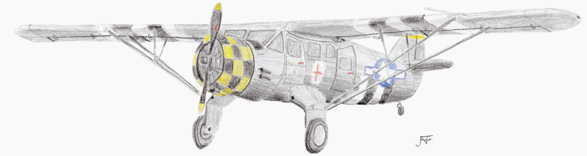

Noorduyn Norseman
Omschrijving
Ik ben sinds 2020 actief als vrijwilliger voor het Nederlands Transport Museum. Daar voerde ik verschillende taken uit, waaronder dingen voor de het Noorduyn Norseman vliegtuig dat onderdeel was van de collectie. Nadat het museum in 2023 haar deuren sloot, ben ik actief gebleven als vrijwilliger voor de stichting Noorduyn Norseman. Het doel van de stichting is om het toestel weer naar een luchtwaardige staat te repareren. Ik draag daaraan bij door reparaties uit te voeren aan onder anderen het doek en het staartstuk van het vliegtuig.